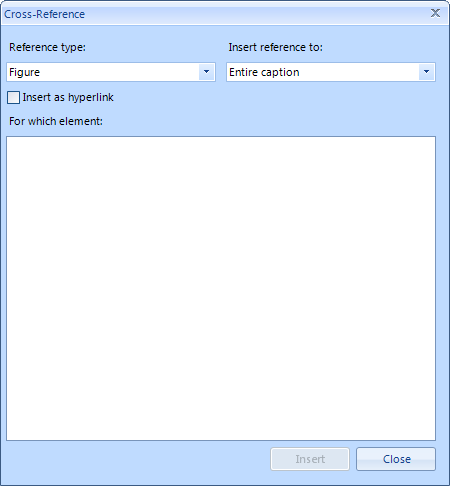
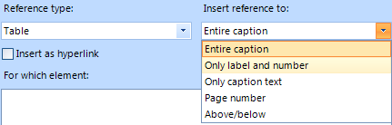

Cross Reference
Cross-References represent fields that refer to a part of the document. When that part changes, these fields can be updated to reflect the change.
You can have a Cross-Reference to a Caption, Heading or Bookmark.
You can insert a Cross-Reference from here:
This article covers:
Insert Cross-Reference
The dialog looks like this:
You can choose between 4 Reference types: Figure, Table, Bookmark and
Heading.

When you have chosen the type of the reference, you should choose one of the items in the "Insert reference to:" combo box. The items depend on the selected item in the "Reference type" combo box.
The Insert as hyperlink checkbox, if checked, will create the field as a hyperlink to the appropriate part of the document.
You can click on it while pressing Ctrl. This will force the cursor to move to the start of the part being referenced.
The For which element listbox shows all the items of the appropriate type that can be chosen.
Clicking on the Insert button inserts the Cross-Reference to the document.
Types of Cross-ReferencesFigure
These are the options you have when you select the Figure reference type:
Entire Caption – inserts a field with text equal to the entire caption. In this case the text would be "Figure 1 CaptionText".
Only label and number - inserts only the label and the number after it. In this case: "Figure 1".
Only caption text - – inserts the caption text only: "aptionText" (the text after the label and the number).
Page number - inserts the number of the page on which the field is located. For example if the field is on the third page,
the text would be “3”.Above/Below – inserts the position of the field relative to the part being referenced. For example if we have a
Caption on the first line of the page and we decide to insert a Cross-Reference in the middle
of the same page to that Caption. We will get the following text – "Above".
Table
Table and Figure are both Captions so they have the same options.
Heading
These are the options when Heading is selected:

Heading text - inserts a field with text equal to the one in the heading chosen. For example here we have a paragraph with
text “Heading1” (and style Heading1). The text inserted by the field would be “Heading1”.Page Number - inserts the number of the page on which the field is located. For example if the field is on the fifth page,
the text would be “5”.Above/Below - inserts the position of the field relative to the part being referenced. For example if we have a
Caption in the middle of the page and we decide to insert a Cross-Reference on the first line of the same page to that Caption.
We will get the following text – "Below".
Bookmark
When Bookmark item is selected in the list with all available bookmarks you see only the names (not the text as with captions
and headings)

Bookmark text - inserts the text in the bookmark. Here the name is shown, not the text. So the field would look something
like "Bookmark Text Here", given that this is the text of the bookmark with name "Bookmark".Page number – inserts the number of the page on which the field is located. For example if the field is on the seventh page,
the text would be "7".Above/Below – inserts the position of the field relative to the part being referenced. For example if we have a
Caption on the first line of the page and we decide to insert a Cross-Reference in the middle of the page to that
Caption we will get the text "Above".
Inserting a Cross-Reference using RadRichTextEditor’s API
All types of Cross-References can be inserted using methods of RadRichTextEditor.
Inserting Cross-Reference to a Bookmark
Every bookmark has a unique name. So in order to insert a reference to a bookmark, you need its name. RadRichTextEditor has
the following method:
__[C#] __
radRichTextEditor1.InsertCrossReferenceToBookmark("Bookmark Name", ReferenceContentType.EntireContent, false);
__[VB.NET] __
radRichTextEditor1.InsertCrossReferenceToBookmark("Bookmark Name", ReferenceContentType.EntireContent, False)
'#End Region
Dim headingParagraph As New Paragraph()
'#Region "heading "
radRichTextEditor1.InsertCrossReferenceToHeading(headingParagraph, ReferenceContentType.OnlyCaption, True)
'#End Region
Dim captionParagraph As New Paragraph()
'#Region "caption"
radRichTextEditor1.InsertCrossReferenceToCaption(captionParagraph, ReferenceContentType.OnlyLabelAndNumber, False)
'#End Region
End Sub
End Class
ReferenceContentType is an enumeration that has five values – EntireContent,
OnlyLabelAndNumber, OnlyCaption, PageNumber and
RelativePosition. As you can see, those values are the same as in the "Insert reference to:" combo box.
The parameter "insertAsHyperlink" is pretty self-explanatory and also can be read about in this section.
Inserting Cross-Reference to a Heading
You have to pass the paragraph (with heading style applied, of course) that you want to create a Reference to. The method signature is as follows:
__[C#] __
radRichTextEditor1.InsertCrossReferenceToHeading(headingParagraph, ReferenceContentType.OnlyCaption, true);
__[VB.NET] __
The parameters are almost the same, except the first one. It represents the paragraph you want to reference. The other two have the same purpose.Inserting Cross-Reference to a Caption
The method signature is:
__[C#] __
radRichTextEditor1.InsertCrossReferenceToCaption(captionParagraph, ReferenceContentType.OnlyLabelAndNumber,false);
__[VB.NET] __
radRichTextEditor1.InsertCrossReferenceToCaption(captionParagraph, ReferenceContentType.OnlyLabelAndNumber, False)
'#End Region
End Sub
End Class
The first parameter represents the paragraph (Caption) you want to refer.